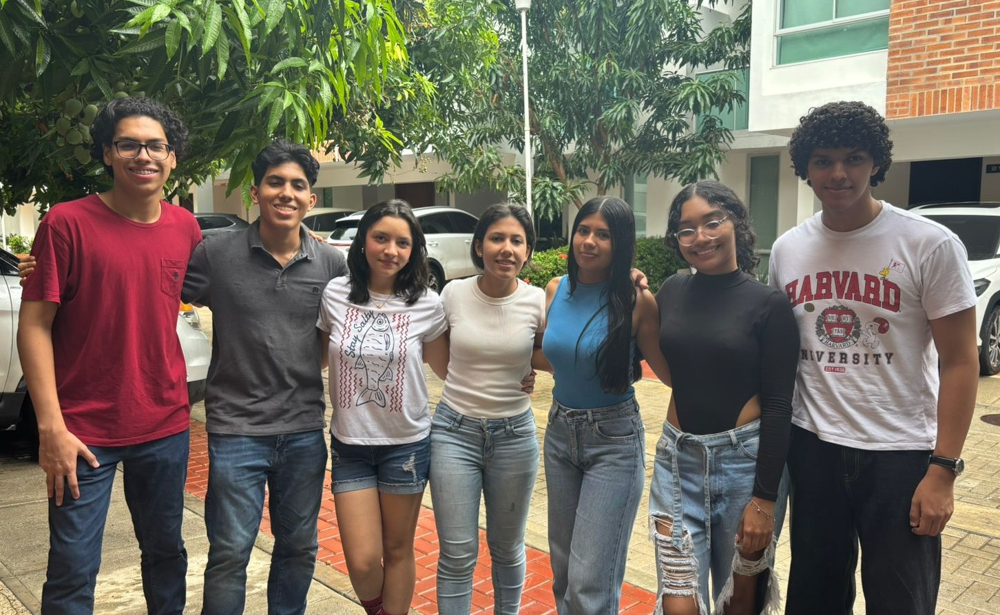

Mundo Interno
Estructura de la Tierra y Geofísica
Contexto
¿Cómo podemos saber qué hay en el centro de la Tierra si nunca hemos podido llegar hasta allí? La respuesta está en la física. A pesar de que los pozos más profundos solo han raspado la capa más superficial de la tierra, los científicos han logrado "ver" su interior gracias a un fenómeno natural: los sismos[cite: 7]. Estos liberan ondas que actúan como un escáner gigante, viajando a través de las capas del planeta y revelando su estructura interna[cite: 7]. A continuación, exploraremos los principios físicos que nos permitieron descubrir las capas de la Tierra y las discontinuidades (Limites invisibles que separan las capas del planeta)[cite: 7]. (Baraniuk, 2015)[cite: 7]
Objetivos
Este proyecto busca demostrar físicamente y tecnológicamente los principios de la física aplicados al descubrimiento de las capas de la Tierra y sus discontinuidades[cite: 7]. La propuesta se centra en la divulgación de estos conceptos de una forma accesible, incluso para personas que no están familiarizadas con las geociencias, mediante la creación de una aplicación, maquetas experimentales y simuladores virtuales[cite: 7]. Principios a demostrar (se incluyen de física mecánica y calor-ondas): Conservación de la energía, propagación de ondas sísmicas, principios de reflexión y refracción, elasticidad y rigidez de los materiales, gravedad y densidad, velocidad de ondas sísmicas[cite: 7].
